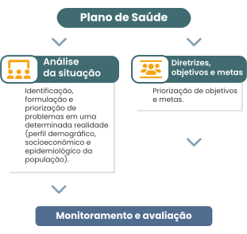

TÓPICO 1
PLANEJAMENTO E PROGRAMAÇÃO EM SAÚDE NO SISTEMA ÚNICO DE SAÚDE (SUS)
TÓPICO 1
PLANEJAMENTO E PROGRAMAÇÃO EM SAÚDE NO SISTEMA ÚNICO DE SAÚDE (SUS)
Nesse sentido:
o plano nacional de saúde explicita as iniciativas prioritárias do Ministério da Saúde;
o plano estadual inclui políticas para o SUS estadual, compromissos prioritários, objetivos e metas, indicadores de acompanhamento e avaliação, além de estimativas orçamentárias;
o plano municipal contém as diversas linhas de ação com os respectivos objetivos específicos e ações estratégicas, cada qual especificando o órgão responsável pelas mesmas e os demais setores envolvidos (BRASIL, 2016; 2006).
Conheça a estrutura de um plano de saúde.
